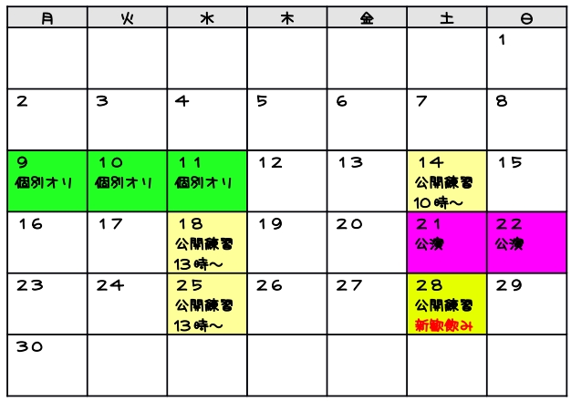

東京工業大学演劇研究部
４月の予定

サークルオリエンテーション
９日、１０日、１１日 → １７：００〜 ＠Ｗ５２１
他のサークルと一緒に説明会を実施しています！
サークルの活動内容・部員の雰囲気を知りたい方はぜひご参加下さい。
ジュース・お菓子等、おもてなしをご用意してお待ちしています！o(^_^)o
（11日は13:00〜16:30の時間帯は部室で実施します！！）
公開練習
１４日 → １０：００〜
１８日、２４日、２８日 → １３：００〜 ＠Ｗ５２１
実際に普段どのような練習をしてるか、一年生に感じてもらいたいと思います！ 発声練習やシアターゲームなど、楽しく稽古の一部を体験できます。見学だけでもOK！まずは一回試しに来てみて！！
Copyright (C)
劇団 娘の予感. All Rights Reserved.